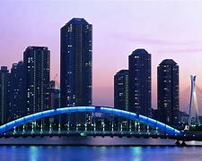
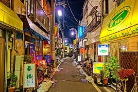

Tokyo, Japan's busy capital, mixes the ultramorden and traditional, from neon-litskycrapers to historic temples. It is no secret that Japan has a stunning amount of beauty, is also home to the Imperial Palace and the seat of Government and Parliament. Located in East Central Honshu, the largest of Japan's main islands, this heavily populated city is well worth visiting, and serves as a great base from which to explore other parts of the country.
 